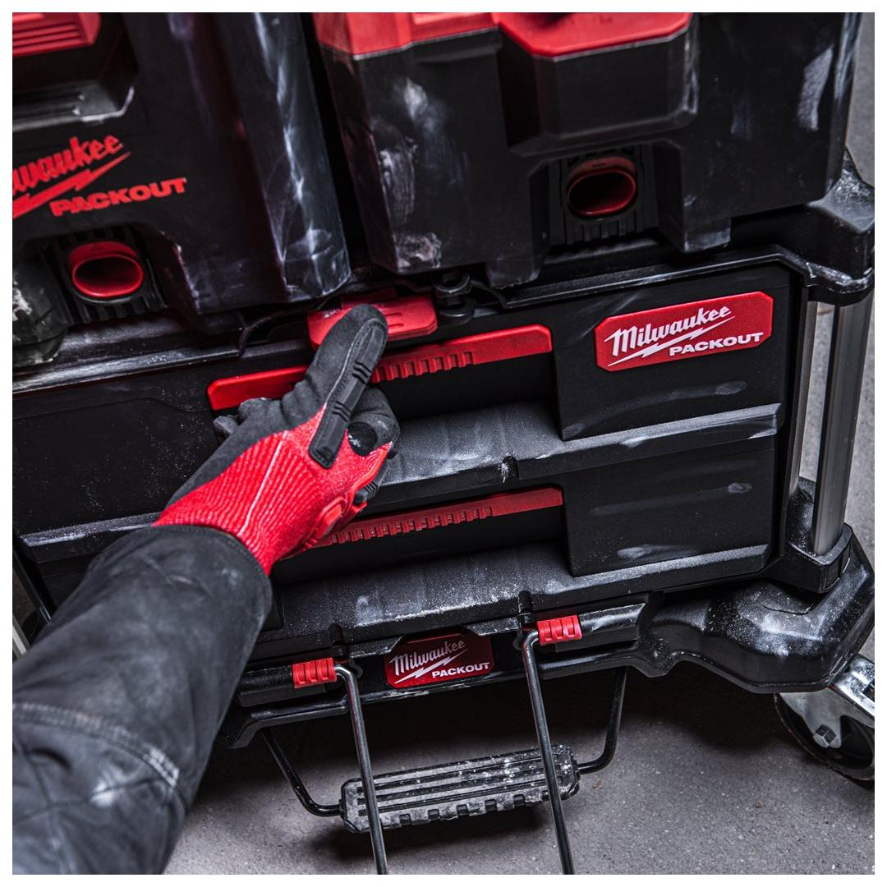
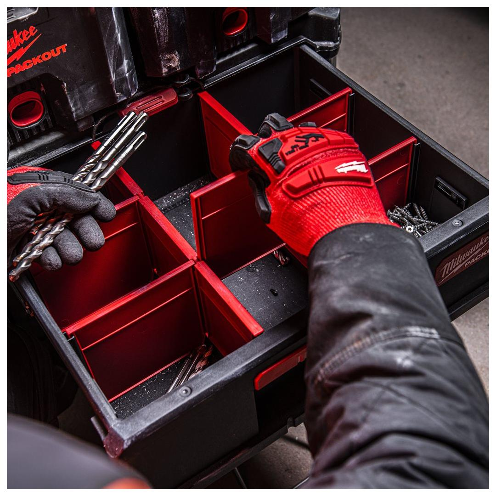
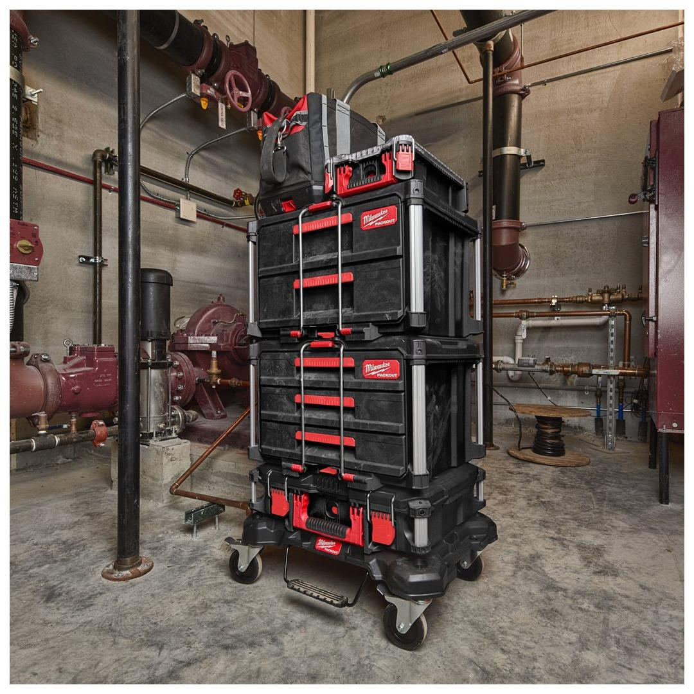
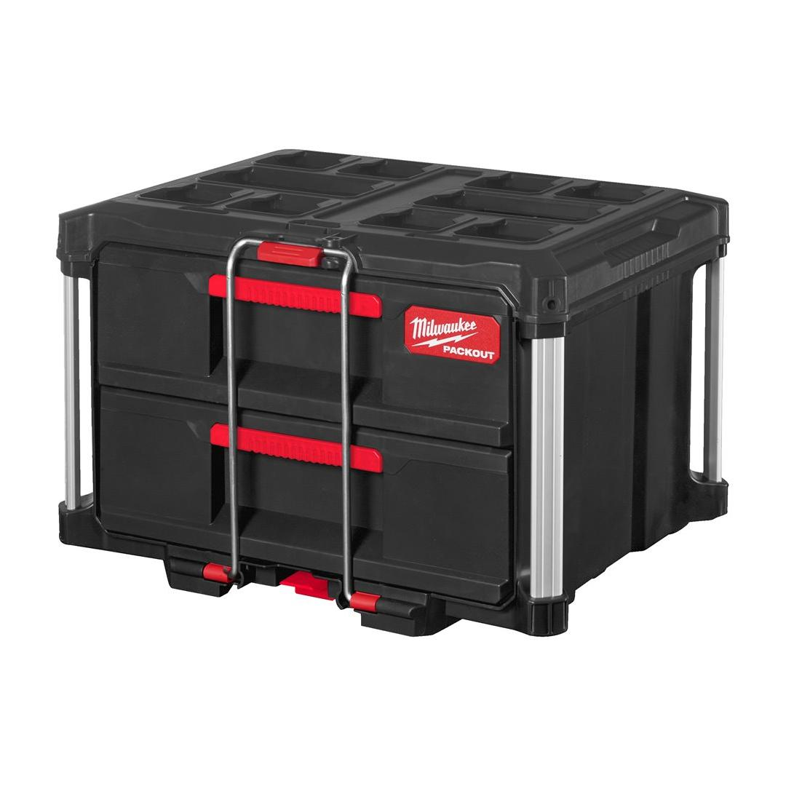
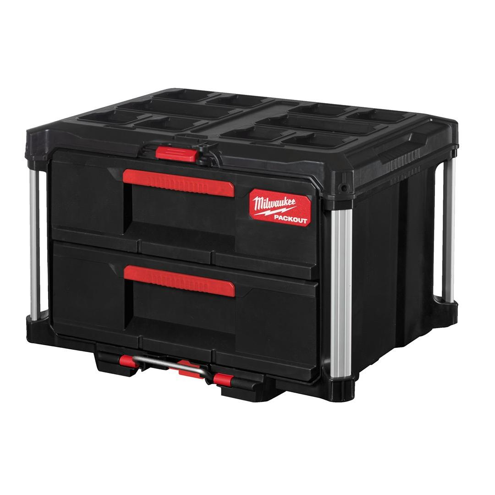

4932472129





| Dimensions (mm) | 363 x 564 x 414 |
| Dimensions [Inner][H x W x D | mm] | 127 x 414 x 318 |
| Loading capacity (kg) | 22 |
| Pack quantity | 1 |
| Size [storage] | 2 Drawer |
| WEB_You tube Milwaukee 1x1 Product Clip | RJAb7MdOf8Q |